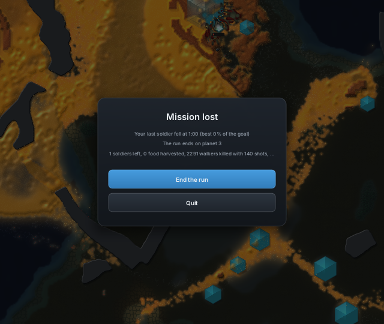
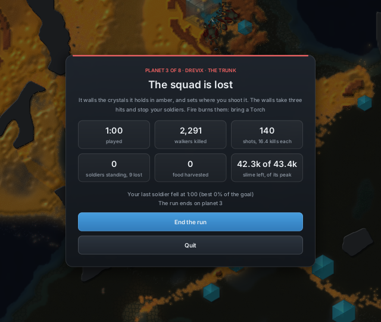
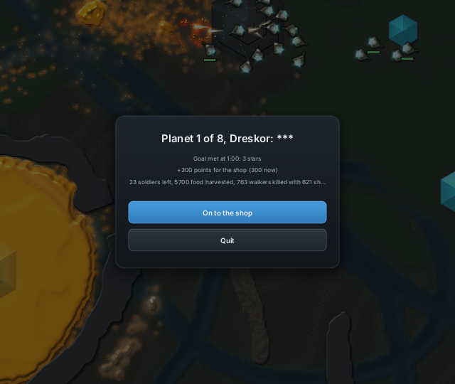
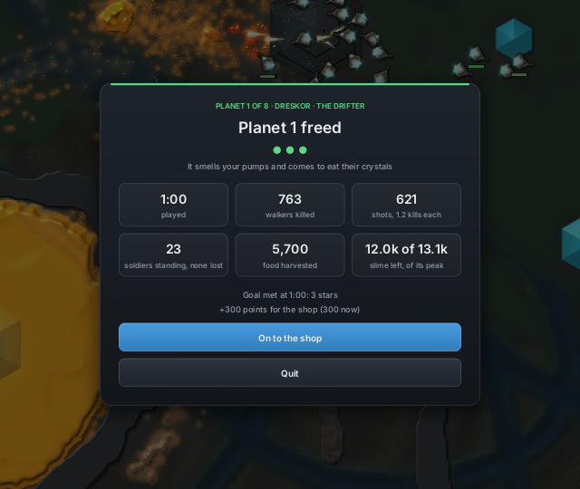
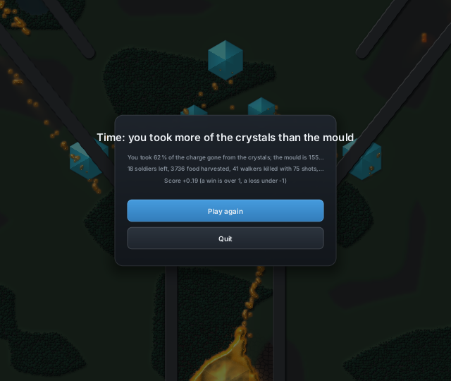
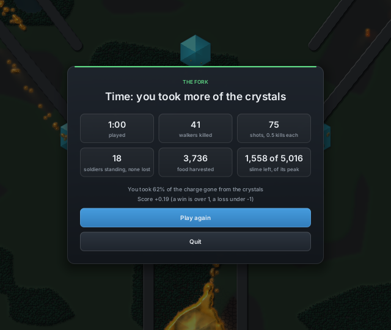
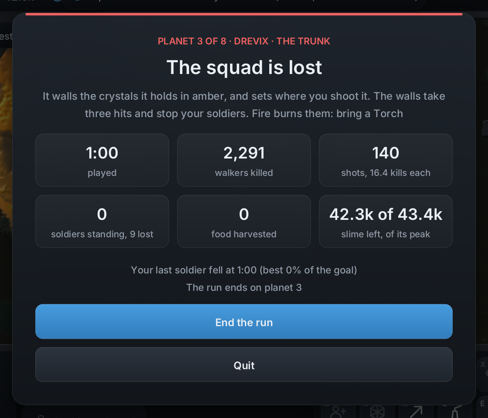

<title>End Screens</title>
<meta name="claude:viewport-fit-sides" content="cover">
<link rel="stylesheet" href="https://fonts.googleapis.com/css2?family=Bricolage+Grotesque:opsz,wght@12..96,600;12..96,750&family=Source+Sans+3:wght@400;600&family=JetBrains+Mono:wght@400&display=swap">
<style>
/* Layout: one reading column; each case is a pair, before on the left and after on the right (stacked on a phone), what it says under each */
:root{
  --bg:#f3f2ec; --panel:#e8e6dc; --fg:#1d211c; --muted:#5b6157;
  --accent:#2f7fb8; --soft:#dfeaf2; --line:#cfccbf;
  --display:"Bricolage Grotesque", "Segoe UI", system-ui, sans-serif;
  --body:"Source Sans 3", "Segoe UI", system-ui, sans-serif;
  --mono:"JetBrains Mono", ui-monospace, Consolas, monospace;
}
@media (prefers-color-scheme: dark){:root:not([data-theme="light"]){
  --bg:#16140f; --panel:#221f18; --fg:#ebe7dd; --muted:#a39d8e;
  --accent:#6cbcf2; --soft:#1c2630; --line:#3a3428; color-scheme:dark}}
:root[data-theme="dark"]{
  --bg:#16140f; --panel:#221f18; --fg:#ebe7dd; --muted:#a39d8e;
  --accent:#6cbcf2; --soft:#1c2630; --line:#3a3428; color-scheme:dark}
body{background:var(--bg);color:var(--fg);font:17px/1.55 var(--body);margin:0;
  padding-left:max(16px,env(safe-area-inset-left,0px));padding-right:max(16px,env(safe-area-inset-right,0px));padding-block:28px 64px}
main{max-width:1180px;margin:0 auto;display:flex;flex-direction:column;gap:30px}
h1,h2,h3{font-family:var(--display);text-wrap:balance;line-height:1.15;margin:0}
h1{font-size:2.3rem;font-weight:750}
h2{font-size:1.45rem;font-weight:750;border-top:2px solid var(--accent);padding-top:14px}
h3{font-size:1.08rem;font-weight:600}
p{margin:0}
section{display:flex;flex-direction:column;gap:14px}
.lede{color:var(--muted);font-size:1.02rem;max-width:760px}
.eyebrow{font:12px/1 var(--mono);letter-spacing:.08em;text-transform:uppercase;color:var(--accent)}
.prose{max-width:760px}
code{font:0.86em var(--mono);background:var(--panel);padding:1px 4px;border-radius:3px}
.grid{display:grid;grid-template-columns:repeat(2,minmax(0,1fr));gap:16px}
@media (max-width:720px){.grid{grid-template-columns:minmax(0,1fr)}}
figure{margin:0;display:flex;flex-direction:column;gap:6px;min-width:0}
figure img{width:100%;height:auto;display:block;border-radius:6px;border:1px solid var(--line);background:#000}
figure.one{max-width:760px}
figcaption{display:flex;align-items:baseline;gap:10px;flex-wrap:wrap;font-size:.92rem;color:var(--muted)}
.side{font:750 1.1rem/1 var(--display);color:var(--fg);min-width:4.6em}
.counts{font:13px/1.4 var(--mono);color:var(--fg)}
.note{background:var(--soft);border-radius:8px;padding:16px 18px;max-width:760px;display:flex;flex-direction:column;gap:8px}
ul{margin:0;padding-left:1.2em;display:flex;flex-direction:column;gap:8px;max-width:760px}
footer{font-size:.85rem;color:var(--muted);max-width:760px}
</style>
<main>
<header style="display:flex;flex-direction:column;gap:10px">
  <span class="eyebrow">Larder World · Look D · 2026-11-18</span>
  <h1>The end of a planet says what happened to you</h1>
  <p class="lede">Before, a planet ended on a small card with a title and three grey lines, and the last line was cut off at 100% UI size. It did not name the planet or its slime, or say what that slime did. Now the card names the planet and its slime in the outcome's colour, green for a win and red for a loss. The title says how it ended, and stars show for a win. Under that is the slime's own sentence, the one the landing alert gives, then the round's numbers as six tiles. The card is wider, and at 200% UI size it shrinks to fit the screen. Each pair is one game ended the same way: a minute of play by the scripted hand, then the end forced as the game makes it, so the numbers are a minute's.</p>
</header>

<section>
  <h2>A planet lost: planet 3, the Trunk</h2>
  <div class="grid">
    <figure><figcaption><span class="side">Before</span><span class="counts">"Mission lost"; the summary cut off</span></figcaption></figure>
    <figure><figcaption><span class="side">After</span><span class="counts">"The squad is lost"; the Trunk's sentence; 6 tiles</span></figcaption></figure>
  </div>
</section>

<section>
  <h2>A planet won: planet 1, the Drifter</h2>
  <div class="grid">
    <figure><figcaption><span class="side">Before</span><span class="counts">"Planet 1 of 8, Dreskor: ***"</span></figcaption></figure>
    <figure><figcaption><span class="side">After</span><span class="counts">"Planet 1 freed"; 3 stars; +300 points</span></figcaption></figure>
  </div>
</section>

<section>
  <h2>A sandbox round at its clock: the Fork</h2>
  <div class="grid">
    <figure><figcaption><span class="side">Before</span><span class="counts">numbers in one cut line</span></figcaption></figure>
    <figure><figcaption><span class="side">After</span><span class="counts">the same numbers as tiles, then the score</span></figcaption></figure>
  </div>
</section>

<section>
  <h2>At 200% UI size on a 1080-line screen</h2>
  <figure class="one"><figcaption><span class="side">After</span><span class="counts">shrunk to fit; a test checks every UI size on three screens</span></figcaption></figure>
</section>

<section>
  <h2>What the card holds</h2>
  <ul>
    <li><strong>Where:</strong> planet 3 of 8, its name and its slime, in green for a win, red for a loss and blue for a sandbox draw, with the same colour along the card's top edge.</li>
    <li><strong>How it ended:</strong> "Planet 1 freed", "The squad is lost", "The slime took the larder", "Out of time" or "Out of food". Stars show only for a win.</li>
    <li><strong>What the slime did:</strong> the tier's sentence, which until now you saw only at landing. It is there to help you say what each slime did to you.</li>
    <li><strong>The numbers:</strong> time played, walkers killed, shots and kills per shot, soldiers standing and lost, food harvested, and the slime left against its peak.</li>
    <li>Below the tiles are how it ended and the run's points, then the same buttons as before.</li>
  </ul>
  <div class="note">
    <h3>Next for the screens</h3>
    <p>The guide's next step for screens is a landing, a win and a loss that happen in the picture, not on a card. This change is the card's half: the numbers and the planet first.</p>
  </div>
</section>

<footer>Pictures from the window's own drawing on the software renderer, 1280 x 800 at 100% (cropped round the card) and 1920 x 1080 at 200%. They are made by the ignored test <code>film_ends</code> in <code>src/bin/larder-world/film.rs</code>. Source: <code>Reports/end-screens-2026-11-18/</code> in the repo.</footer>
</main>
